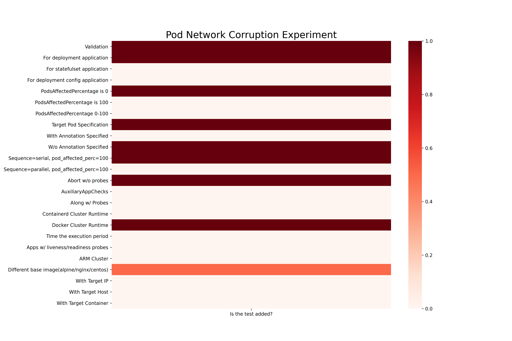
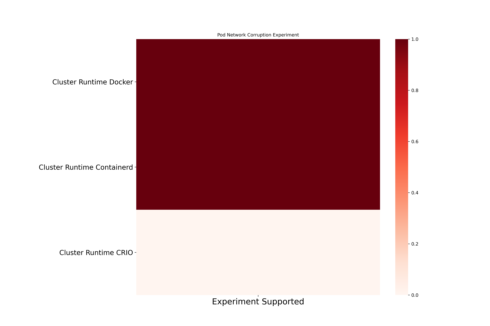
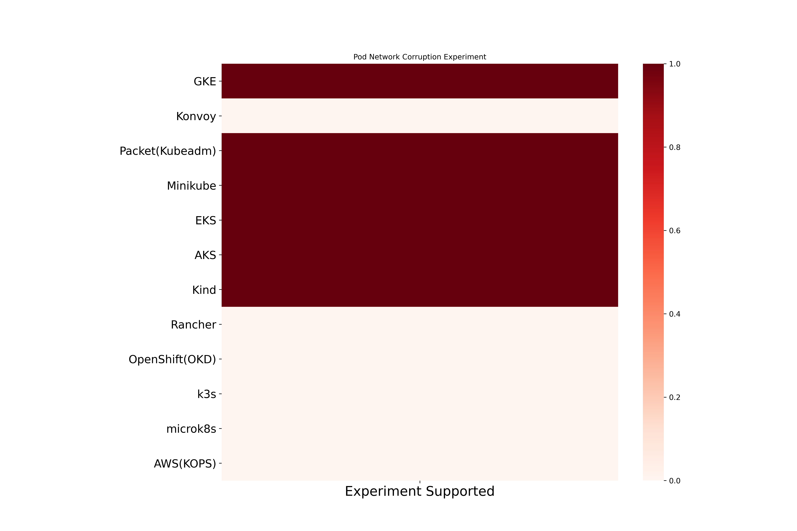

Pod Network Corruption Chaos
Pod Network Corruption inject network packet corruption into application pod. Here are the different coverage metrics for the experiment.
Pod Network Corruption experiment based coverage

Pod Network Corruption cluster runtime based coverage

Pod Network Corruption platform based coverage
